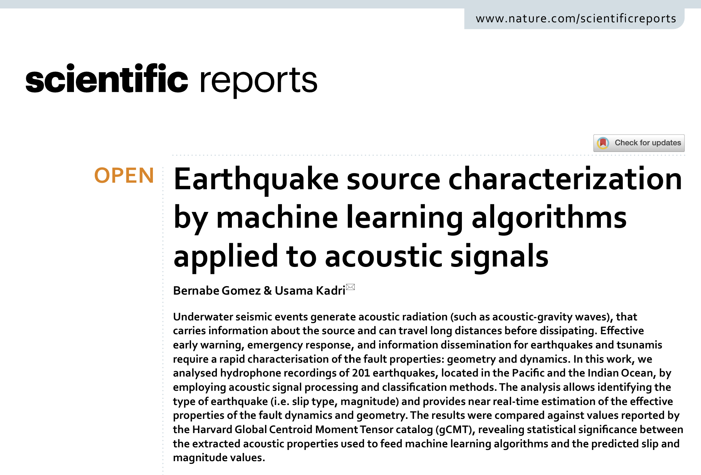

Near real-time calculation of submarine fault properties using an inverse model of acoustic signals

Earthquake source characterization by machine learning algorithms applied to acoustic signals

Numerical validation of an effective slender fault source solution for past tsunami scenarios